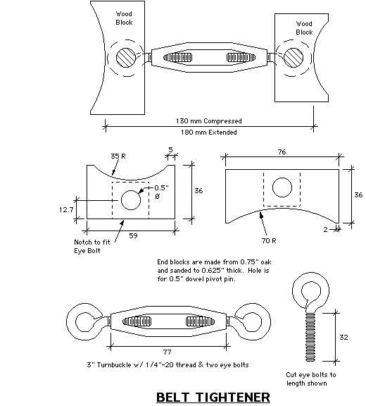
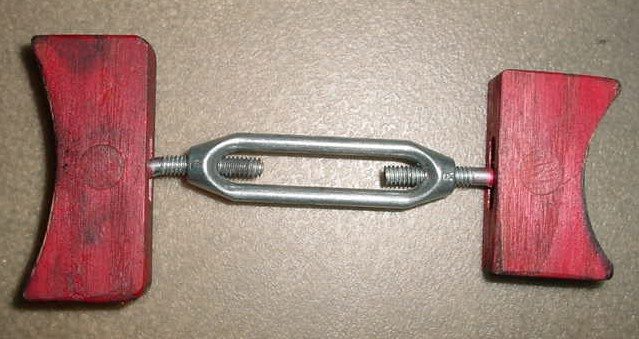

<!--
title: fierosails.com
description: 
published: true
date: 2025-10-29T20:54:53.726Z
tags: fierosails
editor: code
dateCreated: 2025-10-29T20:54:53.726Z
-->


<body bgcolor="#FFFFFF" text="#000000">
<table width="100%" border="0" cellspacing="5" cellpadding="0">
  <tr> 
    <td width="15%" height="1200" align="left" valign="top"> 
      
      <font face="Verdana, Arial, Helvetica, sans-serif" size="2">

<p>
     <a href="index.html">HOME</a><br>

     <a href="order.html">Order Form</a><br><br>
     
     Sail Panels<br>
     <a href="pics.html">- Sail Panel Choices</a><br>
     <a href="whats.html">- What's a Sail Panel?</a><br>
     <a href="howto.html">- How to Remove &amp; Replace Sail Panels</a><br>
     <a href="custom.html">- Custom Graphics</a><br>

     <a href="bargains.html">- Bargains</a><br>
     <a href="care.html">- Sail Panel Care</a><br><br>
     
     Decals<br>
     <a href="decal.html">- Decal Choices</a><br>
     <a href="bargains.html">- Bargains</a><br><br>
     
     Parts<br>

     <a href="paulsphotos.html">- Parts for Sale</a><br>
     <a href="PartsManual.html">- Parts Interchange Manual</a><br>
     <a href="heatshield.html">- Firewall Heat Shield</a><br><br>
     
     Info<br>
     <a href="fierosecrets.html">- Fiero Secrets</a><br>
     <a href="tempgage.html">- Temp Gauge Fix</a><br>

     <a href="InjectorTester.html">- Poor Man's Fuel Injector Tester</a><br>
     <a href="headlights.html">- Headlight Repair</a><br>
     <a href="ElectricAntenna.html">- Fiero Electric Antenna!</a><br>
     <a href="belt.html">- Fix That Loose Belt!</a><br>
     <a href="clubs.html">- Fiero Clubs</a><br><br>

     <a href="payship.html">Payment &amp; Shipping</a><br>

     <a href="refs.html">References</a><br>
     <a href="gallery.html">Rogue's Gallery (photos)</a><br>
     <a href="email.html">Contact Us</a>
<br>
        </font> </p>
    <td width="1%" bgcolor="#FF0000" height="1200" valign="top"></td>
    <td width="84%" align="left" valign="top">


        <font color="red">
        <h1 align="CENTER">V-6 BELT TIGHTENER</h1></center>

        </font> <font size="+0" face="Courier" color="000000"> 
        <p><font face="Verdana, Arial, Helvetica, sans-serif" size="2">Do you hear 
        a squeal from the engine compartment when you start your Fiero?   Yep.  
        It's the alternator belt.  If you've tried to tighten this belt you know 
        it can be a chore.  The gizmo below will remove the difficulty and make 
        tightening the belt an easy one-person job.</p>

<p><font face="Verdana, Arial, Helvetica, sans-serif" size="2">The sketch below 
is self-explanatory.  We can take no credit for the concept but this particular 
rendition may be unique.  To make it work, shorten the tightener as much as 
possible, insert it between the pulleys on the alternator and water pump, then 
twist the turnbuckle until the alternator belt is tight.  Then tighten the bolt 
on the alternator to hold it in postion.  Finally, remove the tightener.  That's it!
 </p>
<p><font face="Verdana, Arial, Helvetica, sans-serif" size="2">

Our turnbuckle was purchased at Home Depot for less than $3.  Make sure yours has 
an eye bolt on both ends, not one eye bolt and a hook.  Make the end blocks from 
hardwood as shown in the sketch.  The eye bolts are held in  hollowed-out areas 
of the blocks with a 1/2" diameter dowel.  This allows the block to pivot and 
self-align with the pulley when tightened.
</p>
<p><font face="Verdana, Arial, Helvetica, sans-serif" size="2">We have used 
commercial versions of this device (from Harbor Freight) but this one works far 
better.  The dimensions in the sketch are in millimeters unless noted as inches.  
Dimensions of the blocks are not critical.
</p>


<p><font face="Courier" size="-1" color="000000"><a href="images/GT.gif">
</a></p>

<p><font face="Verdana, Arial, Helvetica, sans-serif" size="2">A photo
of the original Belt Tightener is shown below.  You can see from the
grease marks it has been well-used!</p> </font>

<p><font face="Courier" size="-1" color="000000"><a href="images/GT.gif">
</a></left></p>
<hr><p>

<p><font face="Verdana, Arial, Helvetica, sans-serif" size="2">What if
the belt continues to loosen and squeal even though you tighten it
properly? Or what if the belt jumps off the pulleys frequently or
becomes shredded every 1000 miles? Here are a few possible causes of these 
problems:

<p>1. <b>Glazed Belt:</b> If the belt has slipped for a while, the belt
surface next to the pulley will become polished or "glazed".  The
resulting lack of friction will cause the belt to slip and squeal even
when properly tightened. While belt dressing will help the problem, we
recommend a new belt.

<p>2. <b>Pulley Mis-alignment:</b> If the pulleys are not aligned
properly (in the same plane) the belt may jump off or shred.  Put a
steel straightedge across the face of the pulleys to check alignment.


<p>3. <b>Wrong Pulley:</b> The number of grooves in the pulleys must match
the number of grooves in the belt.  It happens frequently that an
alternator is changed and the replacement alternator has a pulley with a
different number of grooves.  This is easy to miss and will cause
slippage and eventual destruction of the belt.  You may need to transfer
an old pulley to a new alternator to solve the problem.


<p>4. <b>Worn Threads in Alternator Housing:</b> The steel hold-down
bolt for the alternator inserts into a threaded hole in the aluminum
body of the alternator.  With age the threads in the aluminum can become
worn and the bolt will slowly back out.  If you have to frequently
tighten your alternator hold-down bolt, this may be your problem.  A few
solutions to this are:


<p>(a) Get a new or rebuilt alternator.  Check the threaded hole since
remanufacturers will probably not verify the threads are good.
<p>(b) Use thread lock compound on the bolt every time it is tightened.
<p>(c) Drill out the hole in the alternator so a longer bolt can pass
completely through the mounting ear on the alternator.  Use a lockwasher
and nut to hold the bolt in place.
<p>(d) Repair the worn threads in the alternator body with thread repair compound.


</p> </font>

        </font> 
      
      </td>

  </tr>
</table>


</body>

<!--
     FILE ARCHIVED ON 11:52:33 Dec 05, 2011 AND RETRIEVED FROM THE
     INTERNET ARCHIVE ON 23:56:25 Oct 26, 2025.
     JAVASCRIPT APPENDED BY WAYBACK MACHINE, COPYRIGHT INTERNET ARCHIVE.

     ALL OTHER CONTENT MAY ALSO BE PROTECTED BY COPYRIGHT (17 U.S.C.
     SECTION 108(a)(3)).
-->
<!--
playback timings (ms):
  captures_list: 0.474
  exclusion.robots: 0.023
  exclusion.robots.policy: 0.015
  esindex: 0.008
  cdx.remote: 12.992
  LoadShardBlock: 255.11 (3)
  PetaboxLoader3.resolve: 258.626 (4)
  PetaboxLoader3.datanode: 91.394 (4)
  load_resource: 122.487
-->